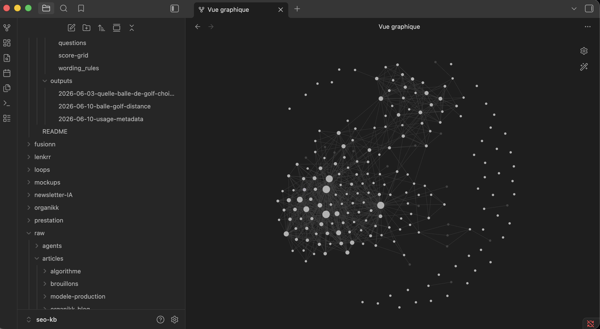
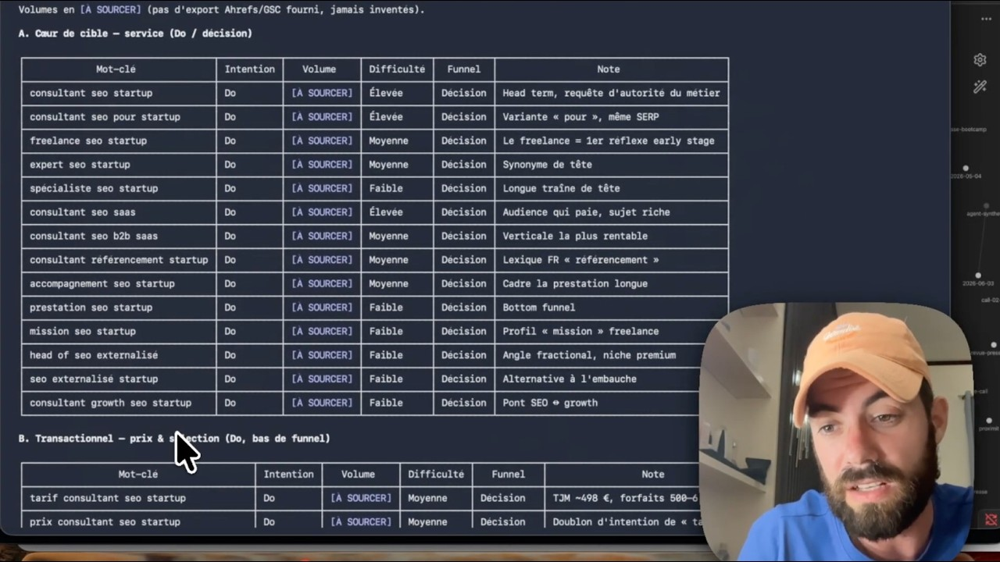

organikk.co · guide agent
De 0 à 1
pour construire
ton agent SEO
sur Claude
Le guide complet pour passer du chatbot à l'agent : la mémoire, les skills, les boucles d'apprentissage et les routines en automatique.
Skillexécute
→
Workflowlivre
→
Boucleapprend
→
Routinetourne
Qadence · Agent SEO
Construire votre agent SEO.
Un agent qui surveille votre site 24h/24, vous alerte, travaille pour vous et vous aide à mieux ranker sur Google, et les IA.
Découvrir Qadence →
Sommaire
IntroductionPour qui, ce que tu sauras à la fin, comment lire ce guide.
Chapitre 1 · De l'assistant à l'agentLes 4 composants d'un agent, pourquoi le construire, la commodité.
Chapitre 2 · De Claude Cowork à ObsidianLe passage au Terminal en 7 étapes (15 minutes), les vraies commandes.
Chapitre 3 · Le socle : le vault et la doctrineLa structure raw/wiki, le fichier AGENTS.md intégral.
Chapitre 4 · La data propriétaireQuoi collecter, le workflow d'ingestion en 5 étapes, retrouver l'info.
Chapitre 5 · Les skills de l'agentAnatomie, un SKILL.md intégral prêt à copier, le catalogue des 9.
Chapitre 6 · La voixLe corpus my-voice.md, la checklist anti-IA writing, la règle des 80.
Chapitre 7 · Les workflows et le contrôle qualitéLes 4 workflows (audit, mots-clés, rédaction, suivi) et le contrôle avant publication.
Chapitre 8 · Les trois bouclesCapture, validation, apprentissage, et la boucle de production schématisée pas à pas.
Chapitre 9 · Les routinesLe menu des 9 automatisations possibles, et le code pour les poser.
Chapitre 10 · Manager ton agentLes points de contrôle, les corrections qui deviennent des règles, les modèles.
Chapitre 11 · Les règles non négociablesSept règles à ne jamais casser.
FAQ · Les questions qui reviennentLes vrais blocages, anonymisés.
Aller plus loinLe système installé en 1:1, et l'agent mot-clé prêt à l'emploi.
Introduction
Demain, les boîtes ne paieront plus pour du TJM. Elles paieront pour ton système. Moi je mise tout sur le système : le mien fait 80 % de mon SEO depuis des mois. Les 20 % qui restent, c'est moi (la stratégie, la data propriétaire, le jugement). Et c'est exactement ces 20 % qu'on facture. Ce guide te lance du 0 à 1 : à la fin, tu as ton agent, et tu gères en autonomie.
Pour y arriver, tu vas faire deux passages. Le premier : du chatbot à l'agent. Un chatbot, tu lui poses une question, il répond, il oublie. À la conversation suivante, tu re-expliques tout. Un agent, c'est le même Claude, mais avec ta mémoire, tes process et ta data : il tourne en automatique à heures fixes et il apprend de ce qu'il publie. Un consultant junior dispo 24h/24 : tu pilotes, lui exécute.
Le second passage : de Claude Cowork au terminal + Obsidian. Cowork, c'est la fenêtre de discussion de Claude, celle que tu utilises déjà. Le terminal, c'est la même intelligence, mais qui agit sur ton PC : elle lit tes fichiers, les écrit, exécute tes skills. Et Obsidian, c'est l'application gratuite qui te sert à lire et organiser ces fichiers. Le terminal fait un petit peu peur comme ça, mais c'est extrêmement simple : tu changes juste de fenêtre de discussion. Le chapitre 2 fait le passage en 15 minutes.
C'est la suite logique de mon premier guide (le système SEO sur Claude, les 9 skills). Le premier posait les compétences. Celui-ci pose tout ce qu'il y a autour : la mémoire, les boucles d'apprentissage, les routines en automatique. C'est la différence entre un Claude qui exécute bien et un agent qui progresse de mission en mission.
Avant de démarrer
Quelques définitions avant de démarrer, parce que personne ne naît en sachant ce qu'est un vault :
- Chatbot : la fenêtre de chat de Claude. Tu poses une question, il répond, il oublie.
- Agent : Claude + ta mémoire + tes skills + des routines + des boucles. Il agit sur tes fichiers et progresse de mission en mission.
- Cowork : l'application de bureau de Claude. C'est encore le chatbot, en mieux outillé.
- Terminal : la fenêtre de commandes de ton PC. C'est là que tourne Claude Code, la version de Claude qui agit au lieu de seulement répondre.
- Obsidian : une application gratuite pour lire et organiser des notes en fichiers texte.
- Vault : le mot d'Obsidian pour ton dossier de notes. Un simple dossier de fichiers texte sur ton PC : c'est la mémoire de ton agent.
- Skill : ta méthode encodée dans un fichier, écrite une fois, exécutable à l'infini.
- Routine : une tâche qui se lance toute seule, à heure fixe, en automatique.
- Boucle : ce qui est publié revient mesuré, et la mesure corrige les décisions suivantes. C'est ce qui fait que le système apprend.
- Cran d'autonomie : la part du travail qui se fait en automatique. Un skill s'exécute quand tu le demandes, une routine se lance toute seule. Du skill à la routine, tu interviens de moins en moins.
Pour qui
Ce guide est pour toi si tu utilises déjà Claude pour ton SEO. Consultant, freelance, in-house, peu importe. Si tu n'as jamais ouvert Claude pour ton SEO, commence par le premier guide, sinon tu vas te noyer. Et je préfère être honnête tout de suite : il n'y a pas de prompt magique là-dedans. Un agent, tu ne le montes pas en une après-midi, tu le montes en plusieurs sessions, chapitre après chapitre. Encore une fois : si t'es pas bon en SEO, Claude ne sera pas bon. L'agent amplifie ta méthode, il ne la remplace pas.
Ce que tu sauras à la fin
- La différence réelle entre un assistant et un agent (4 composants)
- Passer de Claude Cowork à Obsidian + Claude Code sans rien perdre
- Monter le vault : la structure de dossiers qui sert de mémoire, avec la règle raw/wiki
- Écrire ta doctrine : le fichier AGENTS.md intégral, prêt à adapter
- Nourrir l'agent de ta data propriétaire avec un workflow d'ingestion en 5 étapes
- L'anatomie d'un skill d'agent et un SKILL.md complet prêt à copier
- Les trois boucles qui font que le système apprend (avec la fiche preuve intégrale)
- Les routines automatiques : cron, GitHub Actions et les Routines de Claude, code inclus
- Le rôle qui te reste : manager, avec les points de contrôle précis
Comment lire ce guide
Globalement : d'abord je t'explique rapidement, et ensuite on va construire les bases de ton système. Les chapitres 1 à 4, tu les lis dans l'ordre : le principe, le passage de Cowork au terminal, le vault, la data. C'est la base, ne les saute pas. À partir du chapitre 5, tu construis : les skills, la voix, les workflows, les boucles, les routines. Tu peux produire dès le chapitre 5, pas besoin d'attendre la fin du guide. Et le chapitre 11, ce sont les règles non négociables. Garde-le sous la main, c'est lui qui t'évite les erreurs qui coûtent cher.
Chapitre 1
De l'assistant à l'agent
Un assistant répond et oublie. Un agent se souvient, exécute ta méthode, tourne en automatique et se corrige avec tes résultats réels. La différence tient en 4 composants.
Les 4 composants
Quand tu ouvres Claude et que tu poses une question, tu utilises un assistant. Il est bon, mais il repart de zéro à chaque conversation. Tu re-expliques ton client, ton secteur, tes règles. Le résultat dépend de ton prompt du jour.
Un agent, c'est le même Claude, plus quatre choses que tu construis autour :
Les 4 composants d'un agent
─────────────────────────────────────────────────────
1. MÉMOIRE un vault de fichiers markdown
| que l'agent relit à chaque session
▼
2. COMPÉTENCES tes skills : la méthode encodée,
| versionnée, exécutable à l'infini
▼
3. ROUTINES des tâches qui se lancent toutes
| seules, à heures fixes, en automatique
▼
4. BOUCLES ce qui est publié revient mesuré,
et la mesure corrige les décisions
─────────────────────────────────────────────────────
Assistant = Claude seul. Agent = Claude + ces 4 composants.
Les 4 composants, dans l'ordre où tu les construis. Chaque chapitre de ce guide en pose un.
Et pour ne pas tout confondre : skill, workflow, boucle, routine, ce n'est pas la même chose. Chacun est un cran d'autonomie, c'est-à-dire la part du travail qui se fait en automatique. Un skill s'exécute quand tu le demandes. Une routine se lance toute seule, à heure fixe. Le workflow et la boucle sont entre les deux :
Du skill à la routine
─────────────────────────────────────────────────────────
SKILL une compétence isolée. Fait UNE chose précise
(les gains rapides, le maillage…) ch. 5
↓
WORKFLOW des skills enchaînés. Livre un résultat
complet (l'audit en 8 phases…) ch. 7
↓
BOUCLE un circuit fermé : ce qui sort revient
corriger ce qui entre. Le système ne
produit plus seulement, il APPREND ch. 8
↓
ROUTINE ce qui lance tout ça à heure fixe,
en automatique ch. 9
─────────────────────────────────────────────────────────
Un skill exécute. Un workflow livre. Une boucle apprend.
Une routine tourne. L'agent, c'est les quatre ensemble.
L'erreur classique : s'arrêter aux skills et croire qu'on a un agent. Sans les boucles, le système produit mais n'apprend pas. Sans les routines, il n'existe que quand tu l'ouvres.
Pourquoi le construire
Un outil SEO te vend de la commodité : du volume de mots-clés que tout le monde a, des scores que tout le monde regarde. Personne ne paie pour la commodité. Et demain, le skill nu sera banalisé : des acteurs du marché vendent déjà des skills SEO préfabriqués, la valeur du skill seul tend vers zéro.
Ce qui restera payant, c'est le contexte que tu injectes (ta data propriétaire) et l'arbitrage humain en sortie. L'agent, c'est ce qui transforme ces deux choses en production à grande échelle. Il est incopiable, parce que sa matière première, c'est toi.
Le piège à éviter dès maintenant. Un agent SEO, ce n'est pas Claude tout seul. Si t'es pas bon en SEO, Claude ne sera pas bon. L'agent amplifie ta méthode, il ne la remplace pas. Tout ce guide repose sur cette position : tu restes manager, l'agent exécute.
Ce qu'il te faut
Claude Code (l'outil en ligne de commande d'Anthropic, là où l'agent peut lire et écrire des fichiers), un abonnement Claude (Pro suffit pour démarrer), git installé, et plusieurs sessions devant toi. Tu ne montes pas un agent en une après-midi. Tu le montes composant par composant, en produisant dès le premier (et c'est tant mieux : un système parfait qui n'a jamais produit une page ne vaut rien).
Chapitre 2
De Claude Cowork à Obsidian
Le premier guide tournait sur Claude Cowork. L'agent, lui, travaille dans un dossier sur ton PC, ouvert par deux fenêtres : Obsidian pour toi, Claude Code pour lui.
Cowork, le bon point de départ
Si tu as suivi le premier guide, tu travailles dans Claude Cowork : ton dossier de travail local, tes 9 skills posés en glisser-déposer. C'était le bon choix pour démarrer : zéro technique, le contexte persiste, les skills se déclenchent tout seuls quand ta demande matche.
Claude Cowork · projet SEO
Compétences
seo-quick-win
seo-brief-contenu
seo-cannibalisation
maillage-systeme
+ 5 autres…
Analyse ma Search Console
Compétence seo-quick-win activée. Je pars de ton export et je sors le tableau des gains rapides : les pages proches du top 3 dont le taux de clic ne suit pas…
Claude Cowork : tes compétences à gauche, la conversation à droite. C'est le mode assistant, et il marche très bien.
Pourquoi l'agent passe au local
Sauf qu'un agent a besoin de choses que Cowork ne sait pas faire. Il lit et écrit des dizaines de fichiers par session, et ton vault en comptera des centaines : Cowork n'est pas fait pour en traiter autant à la fois. Rien n'y tourne à heure fixe non plus, alors que les routines, c'est tout l'intérêt de l'agent (on les pose au chapitre 9). Et le local t'apporte deux choses au passage : git enregistre chaque modification, donc tu peux revenir en arrière sur tout, toujours. Et Obsidian t'affiche tes notes et les liens entre elles, donc tu vois ce que ton agent sait au lieu de le deviner.
Le même dossier, deux fenêtres
Le passage tient en une phrase : ton dossier de travail Cowork devient ton vault, et tu l'ouvres avec deux outils en même temps. Obsidian, c'est ta fenêtre : tu lis, tu navigues, tu corriges. Claude Code, c'est la sienne : il lit, il écrit, il exécute les skills, il automatise. Aucune synchronisation à gérer, c'est le même dossier sur ton disque.
Obsidian · mon-vault
Fichiers
mon-vault/
▸ raw/
▾ wiki/
▾ sources/
2026-06-call-prospect
▸ concepts/
▸ preuves/
log.md
AGENTS.md
2026-06-call-prospect.md
# Call prospect
Fiche créée par l'agent.
Liée : [[grounding-score]],
[[peurs-objections]]
apparue à l'instant
Terminal · Claude Code
$ cd ~/mon-vault
$ claude
> Lis AGENTS.md puis ingère
raw/notes/call-prospect.md
● Lu. Fiche créée :
wiki/sources/2026-06-call-prospect.md
● 2 concepts mis à jour
● log.md à jour
Les deux fenêtres ouvertes en même temps sur le même dossier. À droite, tu donnes la consigne en français et Claude Code écrit la fiche. À gauche, elle apparaît dans Obsidian à la seconde : tu lis, tu navigues, tu corriges. Aucun export, aucun copier-coller.
Tes 3 fichiers de base. Avant d'aller plus loin, ton agent doit savoir qui tu es. Ça tient en trois fichiers à la racine du vault :
about-me.md (qui tu es, ce que tu vends, tes clients types),
my-voice.md (ton ton de voix : ce que tu fais, ce que tu ne fais jamais) et
my-rules.md (tes règles de sourcing, de rédaction, de SEO). Chaque lien ouvre le modèle prêt à remplir. Tu les remplis une fois, ton agent les relit à chaque session. Tes 9 skills, eux, se déplacent tels quels (étape 5).
Le passage, étape par étape (15 minutes)
C'est le passage que je fais faire en bootcamp, écran par écran. Suis les étapes dans l'ordre, et à chaque étape je te montre ce que tu dois voir : ton écran affiche la même chose, tu continues. Tu ne touches pas à Cowork.
1 · Crée ton dossier de travail dans Documents
Ouvre ton explorateur de fichiers (Mac : Finder · Windows : Explorateur de fichiers). Va dans Documents. Clic droit → « Nouveau dossier » → nomme-le mon-vault, sans espace ni accent. C'est dans ce dossier que tout le guide va se construire. Si tu as déjà un dossier de travail du premier guide, tu n'en crées pas un nouveau : tu déplaces le tien dans Documents, et c'est lui qui devient ton vault.
Une seule règle sur l'emplacement : le dossier reste dans Documents, sur ton disque. Pas dans iCloud, Google Drive ou OneDrive : la synchronisation casse la lecture des fichiers quand Claude en ouvre plusieurs à la fois.
Le cas vu en vrai. Un dossier dans Google Drive qui apparaît vide alors que les fichiers sont bien là : c'est le mode « Diffuser / Stream », qui présente un disque virtuel que le terminal ne sait pas lire. Passe Google Drive en mode « Reproduire / Mirror », ou plus simple : garde ton dossier dans Documents.
2 · Installe Obsidian (pour VOIR tes notes)
Télécharge-le gratuitement sur obsidian.md. Ouvre-le → « Open folder as vault » → choisis ton dossier de travail. C'est tout : tu vois maintenant tes fichiers et les liens entre eux.
3 · Installe Node.js (nécessaire pour la suite)
Va sur nodejs.org, télécharge la version LTS, installe-la (tu cliques « Suivant » jusqu'au bout). Pour vérifier, ouvre ton Terminal (Mac : Spotlight → « Terminal » · Windows : menu Démarrer → « PowerShell ») et tape :
Terminal · toi
$ node --version
v20.11.1
# un numéro s'affiche = c'est bon
4 · Installe Claude Code (pour PILOTER Claude)
Dans le même Terminal, colle cette ligne, puis Entrée :
Terminal · toi
$ npm install -g @anthropic-ai/claude-code
added 248 packages in 12s
# le nombre exact varie, peu importe : pas d'erreur = c'est bon
5 · Mets tes skills au bon endroit
Le Terminal lit toujours tes skills dans un dossier précis : .claude/skills à la racine de ton profil. Cowork range les siens ailleurs, et les deux ne se parlent pas : c'est LE blocage classique. La solution propre, un raccourci (lien symbolique) pour que les deux regardent le même dossier. Tu ajoutes un skill une fois, les deux le voient :
# Mac · si un dossier .claude/skills existe déjà, on le met de côté
mv ~/.claude/skills ~/.claude/skills-ancien 2>/dev/null
# puis on crée le lien (remplace par le chemin de TON dossier de skills)
ln -s ~/Documents/Cowork/Skills ~/.claude/skills
Ces commandes n'affichent aucun message quand elles réussissent. Pas de message = c'est bon. Tu vérifies ensuite :
Terminal · toi
$ ls ~/.claude/skills
seo-recherche-mots-cles seo-clustering-mots-cles
seo-brief-contenu maillage-systeme
seo-mots-cles-decisionnels indexation-check …
# tes dossiers de skills s'affichent = c'est bon
Sur Windows : PowerShell en administrateur, puis New-Item -ItemType SymbolicLink. Si ça refuse, active le Mode développeur dans les Paramètres et recommence.
6 · Crée le fichier CLAUDE.md (la notice que Claude lira tout seul)
Dans Obsidian, crée une note nommée CLAUDE à la racine du dossier (Obsidian ajoute le .md tout seul), et colles-y ta doctrine. C'est le fichier AGENTS.md du chapitre 3 : la version de départ complète y est, prête à copier. Vérifie qu'il est bien à la racine, pas dans un sous-dossier.
7 · Lance et vérifie
Place-toi dans ton dossier, lance Claude, et tape /skills :
Terminal · mon-vault
$ cd ~/Documents/mon-vault
$ claude
✳ Claude Code · dossier : mon-vault
> /skills
Available skills :
seo-recherche-mots-cles
seo-clustering-mots-cles
seo-brief-contenu
maillage-systeme
…
Tu vois ta liste de skills : tu es opérationnel. Liste vide ? Reprends l'étape 5, le dossier doit s'appeler exactement skills dans .claude.
8 · Pour relancer une session plus tard
À chaque nouvelle fenêtre de Terminal, tu retapes simplement les deux mêmes lignes :
Terminal · toi
$ cd ~/Documents/mon-vault
$ claude
Comment ça marche ? Tu n'as rien à expliquer à Claude. Dès que tu lances claude dans ton dossier, il lit tout seul le CLAUDE.md, le mode d'emploi du dossier, et il sait déjà comment travailler dedans. Tu n'as plus jamais à re-coller ton contexte.
Chapitre 3
Le socle : le vault et la doctrine
La mémoire de ton agent, c'est un dossier de fichiers texte versionné en git. Deux couches, une règle d'or, et un fichier de doctrine lu à chaque session.
Pourquoi des fichiers markdown
Pas une base de données, pas un SaaS de plus. Des fichiers texte que tu peux lire toi-même dans n'importe quel éditeur (Obsidian si tu veux naviguer dedans confortablement), versionnés en git pour ne jamais rien perdre. Claude Code lit et écrit ces fichiers nativement. C'est toute la différence avec le chat : l'agent lit ce qui est là, sans que tu aies à coller à chaque fois.
La structure : deux couches
mon-vault/
├── AGENTS.md → ta doctrine (lue à chaque session)
├── raw/ → sources brutes, IMMUABLES
│ ├── articles/ → veille, clippings
│ ├── data/ → exports Search Console, crawls
│ ├── clients/ → notes client, briefs reçus
│ └── notes/ → tes notes, tes transcripts de calls
└── wiki/ → ce que l'agent digère et structure
├── index.md → le catalogue de toutes les pages
├── log.md → le journal, en ajout seul
├── hypotheses.md → les convictions pas encore prouvées
├── contradictions.md → les pages qui se contredisent
├── ingest-backlog.md → le retard de digestion, trié
├── sources/ → une fiche par source ingérée
├── concepts/ → tes concepts SEO (un fichier chacun)
├── briefs/ → les briefs produits
└── preuves/ → contenu publié ↔ résultat mesuré
La structure complète du vault. Les registres (hypotheses, contradictions, ingest-backlog, preuves) servent aux boucles du chapitre 8 : tu les crées vides dès maintenant.
Règle non négociable. raw/ est en lecture seule. L'agent y pioche, il n'y touche jamais. Tout ce qu'il produit va dans wiki/. C'est la séparation entre ta matière première et le savoir traité, et c'est ce qui t'évite de polluer tes sources.
La doctrine : le fichier AGENTS.md
À la racine, un fichier que Claude lit au démarrage de chaque session. C'est lui qui empêche l'agent de retomber dans le corpus moyen. Voici le mien, en version de départ, prêt à adapter :
# AGENTS.md · doctrine de l'agent SEO
Tu lis ce fichier au début de CHAQUE session, puis tu l'appliques.
## Mission
Construire et maintenir un système SEO orienté conversion.
On vise le lead qualifié, pas le trafic.
## Doctrine SEO (s'applique à TOUT ce que tu produis)
- Conversion, pas visibilité. Une page existe pour récupérer
un email qualifié (devis, simulateur, rdv).
- Mots-clés business uniquement : décisionnel et transactionnel.
L'informationnel, les IA le mangent déjà.
- Originalité, pas copie. On donne l'information que les
autres ne donnent pas.
- Le volume n'est pas un critère de choix pertinent.
## Règles dures
1. ZÉRO chiffre inventé. Pas de source = pas d'affirmation.
Une donnée manquante s'écrit "à sourcer", jamais un nombre
plausible.
2. raw/ est immuable. Lecture seule, toujours.
3. Tout output va dans un fichier de wiki/, jamais en réponse
volatile dans le chat.
4. Chaque page de wiki/ cite ses sources et pointe vers au
moins 2 autres pages du vault.
5. Chaque action s'enregistre dans wiki/log.md :
## [AAAA-MM-JJ] action | titre court
6. Si une nouvelle source contredit une page existante :
ne pas écraser. Noter le conflit dans wiki/contradictions.md.
7. Anti-IA writing strict sur toute rédaction
(voir raw/notes/my-voice.md et la checklist).
## Ce que tu ne décides jamais seul
- Publier un contenu (le contrôle qualité doit passer ET je valide).
- Modifier la doctrine ou un skill.
- Trancher une hypothèse (ça passe par une fiche preuve, data réelle).
Ta doctrine v1. Courte volontairement : chaque règle qui s'y trouve est appliquée, chaque règle de remplissage sera ignorée. Elle grossira avec tes corrections (chapitre 9).
Ce que tu as à la fin de ce chapitre : un agent qui connaît tes règles avant d'écrire une seule ligne. Initialise le git (git init, un enregistrement par session de travail) et passe au chapitre 4.
Ce que ton vault devient
Voilà le mien aujourd'hui, vu dans Obsidian. Chaque point est une note (un concept, une source, une preuve), chaque trait un lien entre deux notes. C'est exactement ce que ce guide te fait construire, note après note. Au début tu auras trois points, et c'est normal.

Mon vault réel dans Obsidian (vue graphique). Les gros points sont les concepts les plus reliés : c'est là que l'agent puise avant de produire.

Organikk · Accompagnement 1:1
On construit ton propre agent propriétaire.
En 30 jours, en 1:1 : on monte ton vault, ta doctrine, tes skills et tes routines, calés sur ta data. Je te lance du 0 à 1, et une fois à 1, tu gères en autonomie.
Créer ton propre agent SEO →
Chapitre 4
La data propriétaire
Sans data propriétaire en entrée, l'agent te sort le corpus moyen de Claude. Donc de la commodité. La data, c'est ce qui rend ta production originale et difficile à copier.
Ce que tu collectes
| Source | Ce que ça donne à l'agent |
|---|
| Calls commerciaux (transcrits) | Le vocabulaire exact de tes prospects, leurs objections réelles, les questions posées avant d'acheter |
| Tickets SAV, mails clients | Les vraies frictions, formulées avec les vrais mots |
| Avis clients | Ce qu'ils ont aimé, dit comme eux le disent |
| Search Console | Tes vraies requêtes, celles où tu apparais déjà sans le savoir |
| Anciennes missions (audits, briefs) | Tout ce que tu as déjà appris une fois, réutilisable |
Tu anonymises ce qui doit l'être avant de déposer dans raw/. Et si tu n'as rien d'exploitable, tu ne produis pas : tu commences par aller chercher la data. C'est le pré-requis, pas une option. Je le redis depuis longtemps : vous n'êtes plus des SEO qui créent des pages, vous êtes des SEO qui récupèrent la data.
Le workflow d'ingestion
Déposer un fichier ne suffit pas. L'agent doit le digérer, et la digestion suit toujours le même chemin (tu peux l'encoder en skill, voir chapitre 5) :
Ingestion d'une source · le chemin obligatoire
─────────────────────────────────────────────────────
raw/notes/call-prospect-X.md (la source, immuable)
|
| 1. LIRE le fichier en entier
▼
wiki/sources/2026-06-call-X.md 2. FICHE structurée :
| contexte, chiffres clés,
| limites, implications SEO
▼
wiki/concepts/*.md 3. RELIER : maj des concepts
| touchés + signaler toute
| contradiction
▼
wiki/log.md 4. JOURNALISER une ligne
|
▼
résumé inline 5. REPORTER : 5 bullets +
"quel angle SEO creuser ?"
Une source à la fois. C'est lent au début, et c'est le but : chaque source digérée enrichit le réseau, et le réseau rend les productions suivantes meilleures.
Retrouver l'info
Au début, la recherche texte suffit : l'agent fouille le vault par simple recherche de mots. Quand le vault dépasse quelques centaines de fichiers, tu ajoutes un index de recherche sémantique en local (gratuit, ça tourne sur ton PC, rien à payer). L'idée à retenir est plus importante que l'outil : l'agent doit répondre à « qu'est-ce qu'on sait déjà sur X » avant de produire quoi que ce soit sur X. C'est ce qui fait que ton centième brief est meilleur que ton premier.
Le vrai sujet. La data non digérée, c'est de la data qui n'existe pas pour l'agent. Ton dossier raw/ se remplira toujours plus vite qu'il ne se digère, c'est normal et c'est dangereux. La boucle qui rend ce retard visible arrive au chapitre 8.
Où va ta data (confidentialité et RGPD)
La question arrive toujours, autant y répondre avant qu'on te la pose. Claude Code envoie tes requêtes aux serveurs d'Anthropic : tout ce que l'agent lit pour travailler y passe le temps du traitement. Ce qui compte, c'est ce qu'Anthropic a le droit d'en faire, et ça dépend de ton type de compte.
Sur un compte pro (API, Team, Enterprise), tes données ne servent jamais à entraîner les modèles : c'est le réglage par défaut des conditions commerciales, rien à configurer. Sur un compte perso (Free, Pro, Max), il existe depuis l'été 2025 un réglage « Help improve Claude » dans claude.ai → Settings → Privacy. S'il est activé, tes conversations et tes sessions de code servent à l'entraînement et sont conservées 5 ans. Désactive-le : plus d'entraînement, conservation 30 jours. C'est la première chose à vérifier avant de déposer de la data client dans ton vault.
Et ne confonds pas entraînement et RGPD, ce sont deux sujets. Si tu traites de la data client (calls enregistrés, mails, tickets SAV), trois réflexes : informer les participants quand tu enregistres un call, c'est la base et c'est en amont de tout outil ; préférer un compte pro, parce qu'Anthropic fournit alors un contrat de sous-traitance (le DPA) qui cadre juridiquement le traitement ; et ne garder dans le vault que ce qui sert, anonymisé quand c'est possible.
Le gros avantage du vault. Le brut reste chez toi, en local, dans tes fichiers. Rien ne dort dans un outil cloud. Tu n'envoies à Anthropic que ce qui sert au traitement en cours, et sur un compte pro, ça n'entraîne jamais leurs modèles.
Chapitre 5
Les skills de l'agent
Un skill, c'est ta méthode encodée une fois, versionnée, exécutée à l'identique à chaque fois. La différence avec un prompt : le prompt dérive, le skill s'améliore.
Anatomie d'un skill d'agent
Un dossier dans ~/.claude/skills/, avec un fichier SKILL.md. Claude le charge automatiquement quand ta demande matche sa description. Chaque skill contient sept sections :
SKILL.md · anatomie du fichier
─────────────────────────────────────────────
┌─────────────────────────────────┐
│ --- │ en-tête du fichier
│ name: mon-skill │ · name = nom du dossier
│ description: | │ · description = ce qui
│ Ce que fait le skill… │ déclenche le skill
│ TOUJOURS utiliser quand : … │ (Claude la lit pour
│ --- │ décider d'activer)
├─────────────────────────────────┤
│ # Skill · Mon Skill │
│ ## Quand déclencher │ corps markdown
│ ## Input requis │ · 7 sections types
│ ## Pipeline (N étapes) │ · le « comment »
│ ## Output obligatoire │ étape par étape
│ ## Règles absolues │
│ ## Concepts liés │
└─────────────────────────────────┘
L'anatomie d'un skill. Deux champs YAML pour le déclenchement automatique, des sections markdown pour la procédure. La section « Règles absolues » est celle qui protège ta crédibilité.
Un SKILL.md intégral, prêt à copier
Le skill d'ingestion, celui qui exécute le workflow du chapitre 4. Crée le dossier ~/.claude/skills/ingest-source/ et colle ceci dans SKILL.md :
---
name: ingest-source
description: |
Ingestion d'une source dans le vault : lit un fichier de raw/,
crée la fiche structurée dans wiki/sources/, met à jour les
concepts touchés, journalise dans wiki/log.md.
TOUJOURS utiliser quand l'utilisateur dit : "ingère",
"digère ce fichier", "ajoute cette source au vault",
"traite raw/...".
---
# Skill · Ingestion d'une source
## Quand déclencher
Un fichier de raw/ à digérer. Une source à la fois, jamais
plusieurs d'un coup sans demande explicite.
## Input requis
| Source | Obligatoire |
|--------|-------------|
| Chemin du fichier dans raw/ | Oui |
| Angle de lecture souhaité | Recommandé |
## Pipeline (5 étapes)
1. Lire le fichier EN ENTIER. Pas de survol.
2. Créer wiki/sources/AAAA-MM-JJ-nom-court.md :
contexte, méthode, chiffres clés (sourcés), limites,
implications SEO. Citations exactes courtes seulement.
3. Pour chaque concept touché : si la page wiki/concepts/
existe, l'enrichir ; sinon la créer avec 2 liens sortants.
Si la source CONTREDIT une page existante : ne pas écraser,
noter le conflit dans wiki/contradictions.md.
4. Mettre à jour wiki/index.md.
5. Append dans wiki/log.md :
## [AAAA-MM-JJ] ingest | titre de la source
## Output obligatoire
La fiche source + un résumé inline en 5 bullets terminé par :
"quel angle SEO veux-tu creuser ?"
## Règles absolues
- raw/ reste intact. Lecture seule.
- Aucun chiffre repris sans sa source.
- Une source à la fois.
## Concepts liés
data-proprietaire · ingest-backlog · contradictions
Le premier skill système de ton agent. Les skills SEO (recherche, clustering, brief…) suivent exactement la même anatomie.
Le catalogue : les 9 skills SEO
Le détail et le fichier intégral de chacun sont dans l'article dédié : organikk.co/blog/9-skills-seo-claude. Ici, leur place dans l'agent :
| Skill | Ce qu'il fait |
|---|
| seo-quick-win | Les pages coincées entre la position 3 et la position 12, beaucoup d'impressions, un taux de clic qui ne suit pas : on vide ce retard avant de créer du contenu |
| seo-cannibalisation | Deux pages du site en compétition sur les mêmes requêtes : détecte le conflit, le classe, donne l'action (fusion, différenciation, ou rien) |
| maillage-systeme | Les liens entre tes pages : piliers, pages centrales, pages orphelines |
| seo-programmatique-pseo | 1 modèle + 1 variable = des centaines de pages |
| seo-entites-vectorielles | Les termes qu'une page doit contenir pour coller à l'intention visée |
| seo-cluster-aeo | L'architecture de contenu autour d'un mot-clé pilier, pensée pour les moteurs de réponse |
| seo-product-led-seo | Les outils (calculateur, simulateur) qui captent les requêtes d'achat |
| seo-peurs-objections | Les freins de tes prospects, pour du contenu qui convertit |
| seo-brief-contenu | Le plan de page calé sur ce que les autres n'ont pas dit |
Auxquels l'agent ajoute ses skills système, ceux qui font tourner le système lui-même : ingest-source (ci-dessus, l'encodage du workflow d'ingestion du chapitre 4), preuves-feedback et revue-hebdo (chapitre 8).
L'ordre d'installation
Tu n'as pas besoin de tout le premier jour. L'ordre qui marche : ingest-source d'abord (pour nourrir le vault), puis seo-quick-win, le skill que je lance en premier dès qu'un client me donne accès à sa Search Console : avant de penser à créer du nouveau contenu, on vide le retard d'opportunités déjà présentes. Tu le fais tourner sur un vrai projet, et tu ajoutes les autres quand le besoin arrive.
Ma règle. Un skill mal écrit produit du mauvais travail à grande échelle. Tu construis les skills un par un, avec soin, et tu les corriges à chaque fois qu'un output te déçoit. La correction d'aujourd'hui, c'est la règle de demain (chapitre 10).
Chapitre 6
La voix
L'agent épouse tes expressions et ton de voix. Deux fichiers suffisent.
Le corpus : my-voice.md
Un fichier (ou un dossier) dans raw/notes/ avec tes propres textes : tes posts qui ont marché, tes mails, tes passages de newsletter. Plus tes règles : ce que tu dis, ce que tu ne dis jamais, tes expressions. L'agent le lit avant chaque rédaction et calque le style. Tu peux laisser Claude générer une première version à partir de tes contenus existants : tu l'ouvres, tu corriges, tu valides.
La checklist anti-IA writing
Une liste de contrôle que l'agent passe sur chaque texte avant de te le rendre. À coller dans raw/notes/anti-ia-writing.md et à référencer dans la doctrine :
# Checklist anti-IA writing · à passer sur CHAQUE texte
Vocabulaire interdit
- crucial, pivotal, révolutionnaire, incontournable,
"dans un monde en pleine évolution", "il est important
de noter", "n'oublions pas que"
Structures interdites
- la règle de 3 systématique (3 raisons, 3 étapes, 3 avantages)
- la conclusion-résumé qui répète ce qui vient d'être dit
- la méta-intro ("dans cet article, nous allons voir…")
- le bold sur les premiers mots de chaque paragraphe
- les bullets décoratifs qui remplacent la prose
Style
- pas de métaphore décorative : décrire le fait, littéralement
- phrases courtes alternées avec des plus longues
- le POURQUOI avant le comment
- une position tranchée par texte, assumée
Si une case échoue → on reprend le passage AVANT livraison.
La checklist v1. Tu la complètes à chaque fois que tu repères un tic d'IA dans une sortie : elle s'allonge de mission en mission.
La règle des 80. Le standard de rédaction jusqu'à 100, tu ne l'atteins pas avec l'IA seule. L'agent te monte à 80, proprement, dans ta voix. Les 20 derniers, c'est ta relecture. C'est non négociable.
Et quand tu installes l'agent chez un client : tu refais cette étape avec SA voix. Son corpus, ses règles, même méthode. C'est ce qui rend le système réutilisable sans donner ton style.
Chapitre 7
Les workflows et le contrôle qualité
Un agent qui sait faire neuf tâches séparées, c'est bien. Un agent qui les enchaîne dans le bon ordre sans que tu pilotes chaque étape, c'est l'autonomie.
Un skill fait une chose précise. Un workflow enchaîne plusieurs skills pour livrer un résultat complet : la sortie d'un skill nourrit le suivant. Mon système tient en quatre workflows, calibrés sur des dizaines de projets : l'audit, les mots-clés, la rédaction, le suivi. C'est le rythme que j'applique chez mes clients : la première semaine pose le socle, ensuite un workflow par semaine. Au bout d'un mois, le cycle complet a tourné une fois.
Les 4 workflows · un par semaine
─────────────────────────────────────────────────────────
1. AUDIT « qu'est-ce qui ne va pas sur ce site »
Search Console + crawl → plan d'action priorisé
↓
2. MOTS-CLÉS « qu'est-ce qu'on crée maintenant »
thématique → pages à créer, triées par conversion
↓
3. RÉDACTION « on prépare la page »
brief + contenu pré-rempli dans ta voix → toi
↓
4. SUIVI « qu'est-ce que ça a donné »
la Search Console mesure → corrections, gains rapides
│
└──→ ce que le suivi trouve repart en 1 ou en 2
─────────────────────────────────────────────────────────
L'agent enchaîne les skills à l'intérieur de chaque
workflow. Toi, tu valides entre deux workflows.
Le cycle complet. Le suivi de ce mois-ci décide les pages du mois prochain : c'est ce qui fait que le système progresse au lieu d'empiler.
Workflow 1 · L'audit SEO complet (8 phases)
Il répond à « qu'est-ce qui ne va pas sur ce site ». 100% données Google et structure du site : Claude Pro à 20 €/mois, la Search Console, Chrome et Lighthouse. Aucun outil payant tiers. Une phase nourrit la suivante.
| Phase | Skill | Durée |
|---|
| 0 · Positionnement | aucun (prompt + Search Console) | 20-30 min |
| 1 · Indexation | indexation-check | 15-25 min |
| 1bis · Vitesse des pages | seo-core-web-vitals | 10-15 min |
| 2 · Gains rapides | seo-quick-win | 15-20 min |
| 3 · Structure des pages | aucun (prompt + crawl) | variable |
| 4 · Cannibalisations | seo-cannibalisation | 15-20 min |
| 5 · Maillage (2 passes) | maillage-systeme puis maillage-interne-gsc | 25-40 min |
| 6 · Synthèse + plan d'action | aucun (synthèse) | 20-30 min |
Budget : 2 à 3 heures sur les phases à durée fixe, plus 1 à 2 heures en phase 3 selon la taille du site. Étalable. La phase 1bis (vitesse) tourne uniquement côté Terminal. Le rapport se termine sur un horizon « mois 2-3 : nouvelles pages sur les manques », et c'est là que le workflow mots-clés prend le relais.
Workflow 2 · Les mots-clés (3 skills enchaînés)
Il répond à « qu'est-ce qu'on crée maintenant ». Trois skills qui transforment une thématique en pages qui rankent et qui convertissent :
Le workflow mots-clés
─────────────────────────────────────────────────────────
seo-recherche-mots-cles
thématique → 50-150 mots-clés qualifiés
(intention + volume + difficulté)
↓
seo-clustering-mots-cles
la liste → des groupes exploitables (1 groupe = 1 page)
↓
seo-mots-cles-decisionnels
les groupes → les requêtes qui convertissent vraiment
↓
seo-brief-contenu / seo-cluster-aeo → la rédaction
─────────────────────────────────────────────────────────
La recherche sort la matière, le regroupement la découpe
en pages, le décisionnel isole ce qui rapporte. La sortie
repart dans le workflow rédaction.
Règle stricte sur toute la chaîne : l'agent n'invente jamais un volume ni une difficulté. Il structure et qualifie l'intention ; les chiffres viennent de la Search Console ou d'un outil, jamais de sa tête.
Workflow 3 · La rédaction
Il part d'un groupe du workflow mots-clés et prépare la page. Je dis bien préparer : l'agent ne rédige pas la page à ta place, il t'aide à la rédiger. Il crée le brief (seo-brief-contenu) : le plan de la page, les entités à couvrir, ce que les pages déjà positionnées n'ont pas dit. Il y reprend ton ton de voix (chapitre 6) et les objections de tes prospects (seo-peurs-objections). Puis il pré-remplit le contenu, nourri de ta data propriétaire (chapitre 4) : la rédaction finale, c'est toi. Et avant publication, le contrôle qualité, détaillé page suivante. Encore une fois : l'agent te monte à 80, les 20 derniers c'est ta relecture.
Workflow 4 · Le suivi
Il répond à « qu'est-ce que ça a donné ». Une précision honnête : l'agent n'a pas accès à ta Search Console tout seul, il travaille sur un export que tu déposes dans le vault (5 minutes par mois) ou qui arrive par le branchement du chapitre 9. Une fois par mois, il reprend cet export : les pages en position 3 à 12 dont le taux de clic ne suit pas (seo-quick-win), les pages qui se mangent entre elles sur le même mot-clé (seo-cannibalisation), les liens internes à renforcer (maillage-interne-gsc). Et chaque page publiée a sa fiche preuve, mesurée à J+30 et J+90 : c'est la boucle sortie → apprentissage du chapitre 8. Ce que le suivi trouve repart dans l'audit ou dans les mots-clés du mois suivant.
Le contrôle qualité
C'est le point de contrôle où le contenu est vérifié avant de sortir. Il tient en quatre critères, et chacun se vérifie par un oui ou par un non :
CONTRÔLE QUALITÉ · 4 critères, tous obligatoires
─────────────────────────────────────────────────────
[ ] 1. Chaque affirmation chiffrée a sa source
(zéro "à sourcer" restant dans le texte publié)
[ ] 2. La checklist anti-IA writing passe
[ ] 3. La page répond à l'intention visée du brief
(pas au mot-clé : à l'INTENTION)
[ ] 4. La page propose une action concrète
(formulaire, simulateur, devis, rdv)
4/4 → publiable (après TA validation)
sinon → retour en rédaction, avec le critère raté
Une page qui rate un critère ne sort pas. Même produite à 3h du matin par une routine.
On ne crée pas un article par un article. On crée une cohérence sémantique pour le client. L'agent tient cette cohérence sur des centaines de pages, ce qu'aucun humain ne tient à la main : c'est précisément pour ça que le contrôle doit être écrit noir sur blanc, pas dans ta tête.
Ma règle. Tant que tu débutes, garde tes skills isolés et enchaîne-les à la main. Tu ne transformes un enchaînement en automatisme que quand il a tourné sans accroc 5 fois de suite. Pas avant. Automatiser une méthode pas encore stable, c'est figer une erreur et la rejouer en boucle.
Chapitre 8
Les trois boucles
C'est la partie que tout le monde saute, et c'est celle qui sépare un agent qui produit d'un agent qui progresse. Un système qui capture et produit sans jamais se relire, ça grossit, ça ne s'améliore pas.
Les 3 boucles fermées de l'agent
─────────────────────────────────────────────────────────
BOUCLE 1 · capture → traitement
raw/ se remplit ──→ tri hebdo ──→ retard listé ──→ ingestion
│
BOUCLE 2 · doctrine → validation │
hypothèses ──→ confrontées aux sources ──┘
▲ │
│ ▼ statuts : ouverte / en test /
│ validée / invalidée
│
BOUCLE 3 · sortie → apprentissage
page publiée ──→ fiche preuve + prédiction datée
│ │
│ J+30 / J+90 : la Search Console tranche
│ │
└──── le verdict corrige la doctrine ◄──────┘
─────────────────────────────────────────────────────────
Sans la boucle 3, "ma méthode marche" reste un argument
commercial. Avec, c'est un fait mesuré.
Les trois boucles et leur point commun : tout finit par corriger la doctrine. C'est le contraire d'un système qui empile.
Boucle 1 · capture → traitement
Ton dossier raw/ se remplit plus vite qu'il ne se digère. La boucle : une fois par semaine, l'agent compare ce qui est dans raw/ avec ce qui a été ingéré dans wiki/sources/, et écrit la liste du retard dans wiki/ingest-backlog.md, triée par priorité (la data terrain d'abord, la veille ensuite). Tu décides quoi ingérer, il ingère.
Boucle 2 · doctrine → validation
Ta doctrine contient des convictions. Certaines sont prouvées, d'autres sont des paris. Deux registres les rendent honnêtes : wiki/hypotheses.md (chaque conviction non prouvée, avec son statut) et wiki/contradictions.md (deux pages du vault qui disent l'inverse, repérées à l'ingestion). Une fois par mois, l'agent confronte les hypothèses aux sources ingérées depuis la dernière revue et fait avancer les statuts.
Règle dure. Une hypothèse ne passe jamais « validée » sur un ressenti. Elle passe validée sur une fiche preuve adossée à de la data réelle. Sinon tu construis une doctrine qui a l'air solide et qui n'est que de l'opinion empilée.
Boucle 3 · sortie → apprentissage
La plus rentable des trois. Chaque contenu publié doit revenir mesuré. Le mécanisme tient dans un fichier, la fiche preuve, créée à la publication :
# wiki/preuves/2026-06-10-page-simulateur-x.md
## Le pari
- Page : /simulateur-x
- Mot-clé visé : "simulateur x prix" (décisionnel)
- Hypothèse testée : "une page outil capte plus d'emails
qu'une page éditoriale sur la même requête"
→ wiki/hypotheses.md #12
## Prédictions datées
- J+30 : la page reçoit ses premières impressions sur la
requête visée, position ≤ 20
- J+90 : ≥ 1 lead attribuable à la page
## Mesures (remplies par la boucle, jamais à la main)
- J+30 [date] : position réelle, impressions, clics → verdict
- J+90 [date] : leads, position → verdict
## Verdict final
- hypothèse #12 : confirmée / infirmée / non concluant
- ce qu'on en tire pour la doctrine :
La fiche preuve intégrale. Les mesures J+30 et J+90 viennent d'un export Search Console : déposé à la main dans le vault, ou récupéré par le branchement du chapitre 9 (compte de service + script). L'agent remplit la fiche depuis l'export, jamais depuis sa tête.
Au bout de quelques cycles, l'agent ne décide plus seulement avec ta doctrine : il décide avec ta doctrine corrigée par tes résultats réels. Le SEO, ce sont des tâches mathématiques que l'on répète jusqu'à trouver des patterns. Cette boucle, c'est ce qui trouve les patterns à ta place.
La boucle appliquée à la production
Le cas concret, celui que j'utilise sur tout ce qui se publie : on enveloppe le workflow de rédaction dans une boucle. Chaque page produite nourrit la suivante. C'est la différence entre écrire 100 pages et écrire 100 fois la même page.
La boucle de production · chaque page apprend de la précédente
──────────────────────────────────────────────────────────────
┌─────────────────────────────────────────────┐
▼ │
1. BRIEFING l'agent relit la mémoire du projet :│
│ ce qui a marché, les règles apprises│
▼ │
2. PRODUCTION le workflow rédaction, dans ta voix │
│ │
▼ │
3. VÉRIFICATION chaque affirmation chiffrée est │
│ contrôlée : 2 sources, dont la │
│ source d'origine. Les faits sont │
│ séparés des interprétations │
▼ │
4. CONTRÔLE les 4 critères du chapitre 7. │
│ Ça passe, ou ça ne sort pas │
▼ │
5. PUBLICATION + la prédiction datée (J+30 / J+90) │
│ │
▼ │
6. MESURE la Search Console tranche │
│ │
▼ │
7. APPRENTISSAGE le verdict et tes corrections │
│ deviennent des règles durables ─────┘
▼
la page suivante démarre plus haut que la précédente
Les étapes 1 à 5, l'agent les déroule seul. La 6 vient de l'export Search Console (déposé à la main, ou automatisé par le branchement du chapitre 9). La 7 réécrit la mémoire du projet : c'est elle qui ferme la boucle. La 100e page est meilleure que la 1re, pas parce que le modèle a changé, parce que la mémoire s'est remplie.
Ce qui fait tenir la boucle. Une affirmation n'entre dans une page que vérifiée. Une hypothèse ne se valide que par une mesure. Une correction ne reste pas une correction, elle devient une règle. Retire un de ces trois verrous et la boucle tourne quand même, mais elle apprend tes erreurs au lieu de tes réussites.
Le rituel : 15 minutes le vendredi
Les boucles produisent des propositions. Quelqu'un doit trancher, et ce quelqu'un c'est toi. Un rendez-vous hebdomadaire, ordre du jour fixe :
Revue hebdo · ordre du jour (préparé par l'agent)
─────────────────────────────────────────────────────
1. Preuves rentrées cette semaine (J+30 / J+90)
→ verdicts à valider
2. Hypothèses qui ont bougé
→ promotions / invalidations à trancher
3. Contradictions ouvertes
→ laquelle fermer cette semaine
4. Backlog d'ingest
→ le lot de la semaine prochaine
5. UNE décision d'orientation (pas plus)
L'agent propose à 95%, tu arbitres les 5% de jugement irréductible. Si le rituel te prend une heure, c'est que les boucles sont mal réglées.
Chapitre 9
Les routines
Tout ce qui précède peut se lancer à la main. Les routines, c'est ce qui le lance à ta place, à heures fixes. C'est ce qui transforme l'assistant en agent.
Le principe : Claude sans interface
Claude Code sait tourner sans écran, avec une consigne passée en argument. C'est la base de toutes les routines :
# La commande de base : Claude exécute et s'arrête
claude -p "Lis AGENTS.md puis fais le tri du backlog :
compare raw/ et wiki/sources/, mets à jour
wiki/ingest-backlog.md, enregistre."
L'option -p lance Claude sans interface : il lit la consigne, travaille dans le dossier, rend la main. Tout ce qu'une routine fait passe par là.
Les 3 façons de planifier
| Méthode | Où ça tourne | Pour qui |
|---|
| cron / launchd | Ton PC (allumé) | Le plus simple pour démarrer |
| GitHub Actions | Le cloud, sur ton GitHub | PC éteint, vault déjà sur GitHub |
| Tâches planifiées Claude | Le cloud Anthropic | Le quotidien, zéro technique à gérer |
Façon 1 · en local (cron)
# crontab -e : le tri du backlog, chaque lundi à 8h
0 8 * * 1 cd ~/mon-vault && claude -p "Lis AGENTS.md puis \
fais le tri du backlog d'ingest. Enregistre le résultat." \
>> ~/mon-vault/.logs/tri-backlog.log 2>&1
Une ligne par routine. Sur Mac, launchd fait la même chose avec un fichier .plist (même logique, syntaxe XML). Le >> log est obligatoire : une routine sans journal est une routine que tu ne peux pas déboguer.
Façon 2 · GitHub Actions
# .github/workflows/tri-backlog.yml
name: tri-backlog
on:
schedule:
- cron: "0 8 * * 1" # lundi 8h UTC
jobs:
tri:
runs-on: ubuntu-latest
steps:
- uses: actions/checkout@v4
- name: Run Claude
env:
ANTHROPIC_API_KEY: ${{ secrets.ANTHROPIC_API_KEY }}
run: |
npm install -g @anthropic-ai/claude-code
claude -p "Lis AGENTS.md puis fais le tri du
backlog d'ingest. Mets à jour wiki/ingest-backlog.md."
- name: Commit
run: |
git config user.name "agent"
git add -A && git commit -m "tri backlog" || true
git push
Le même tri, PC éteint. La clé API va dans les secrets du dépôt GitHub, jamais dans le fichier. Attention au coût : cette route passe par l'API, facturée à l'usage, en plus de ton abonnement (la FAQ prix détaille).
Façon 3 · les Routines de Claude (dans le cloud)
C'est ce qu'Anthropic appelle officiellement les Routines (research preview depuis avril 2026) : le même mot que les routines de ce guide, et c'est le nom à chercher dans le produit. Depuis Claude Code, tu demandes simplement : « planifie une tâche quotidienne qui fait X sur ce vault ». La routine tourne dans le cloud d'Anthropic, sur ton vault hébergé sur GitHub, à l'horaire que tu donnes ; elle peut aussi se déclencher par l'API ou par un événement GitHub. Zéro technique à gérer. C'est ce que j'utilise pour le quotidien.
Tout ce que tu peux automatiser (le menu)
Ce menu est celui qui tourne chez moi. Chaque ligne est une routine indépendante : tu en poses une, elle écrit dans le vault, tu lis le résultat quand tu veux.
| Automatisation | Cadence | Ce que ça fait |
|---|
| Veille quotidienne | Chaque matin | Un brief sourcé sur ta thématique : chiffres, études, ce qui a bougé. C'est le système qui fait tourner ma newsletter, et il se rebranche sur la thématique d'un client |
| Pull Search Console | Le 1er du mois, 7h | Récupère l'export (via le branchement ci-dessous), remplit les fiches preuves J+30 / J+90 |
| Audit d'indexation | Mensuel | Sitemap complet : quelles pages Google ignore, et pourquoi |
| Tri du backlog | Lundi, 8h | La liste de la data non digérée, triée |
| Revue des hypothèses | Le 1er du mois, 8h30 | Confronte la doctrine aux sources du mois |
| Résurgence | Mercredi, 9h | Remonte un concept oublié du vault : toujours juste ? à challenger ? |
| Revue hebdo | Vendredi, 17h30 | Prépare l'ordre du jour du rituel (toi tu arbitres) |
| Le point du jour | Chaque soir | Un email : ce que l'agent a fait aujourd'hui, et la santé du système |
| Le point de la semaine | Samedi midi | Un email : tout ce qui a été produit cette semaine |
Tu n'en poses pas neuf le premier mois. Tu commences par deux : le tri du backlog et le pull Search Console. Le reste vient quand le vault tourne et que tu sais ce qui te fait gagner du temps.
Deux règles de sécurité, apprises en me plantant. Un : une routine n'invente jamais un chiffre. Si elle n'a pas la donnée, elle écrit « rien à signaler » et s'arrête. Une routine qui hallucine en silence à 3h du matin, c'est pire que pas de routine. Deux : une routine écrit toujours un journal de ce qu'elle a fait. Quand un résultat te surprend, tu remontes le log au lieu de deviner.
Brancher la Search Console
Soyons clairs : Claude n'a pas accès à ta Search Console naturellement. Pour que la data arrive, il faut une API, un export, ou un script entre les deux. C'est la seule routine qui demande un vrai branchement technique : un compte de service Google avec accès à ta propriété Search Console, et un script qui dépose l'export mensuel dans raw/data/. Une fois posé, la boucle 3 du chapitre 8 tourne toute seule : l'export arrive, l'agent met à jour les fiches preuves, les verdicts tombent. En attendant le branchement, l'export manuel mensuel depuis l'interface Search Console fait exactement le même travail (5 minutes par mois, et tu démarres aujourd'hui).
Chapitre 10
Manager ton agent
À ce stade, l'agent connaît tes règles, il est nourri de ta data, il exécute tes skills dans ta voix, il tourne à heures fixes et il apprend de ses résultats. Ton rôle change : tu n'exécutes plus, tu manages.
Tenir tes positions
Si Claude affirme « c'est comme ça qu'on fait en SEO » et que ton expérience dit l'inverse, c'est toi qui as raison. Tu le brides, tu lui redonnes le contexte, tu corriges la doctrine. Soyez manager, soyez certains de vos positions. Le jour où tu valides sans lire, le système dérive et tu ne le vois pas.
Transformer chaque correction en règle
Tu reformules un titre une fois, c'est de la relecture. Tu le reformules trois fois pour la même raison, c'est une règle qui manque. Le réflexe à prendre :
Le cycle correction → règle durable
─────────────────────────────────────────────────────
1. Tu corriges un output (relecture)
2. Même correction une 2e fois ? (signal)
3. Tu écris la règle :
· tic d'écriture → anti-ia-writing.md
· erreur de méthode → le SKILL.md concerné
· principe général → AGENTS.md
4. L'erreur disparaît POUR TOUJOURS
─────────────────────────────────────────────────────
C'est le seul moment où la doctrine a le droit de
grossir : jamais par anticipation, toujours par
correction vécue.
La doctrine et les skills grossissent par l'usage, pas par la théorie. C'est ce qui les garde appliqués.
Valider aux gates, pas à chaque étape
Tu n'es pas là pour relire chaque paragraphe. Tu es là à trois moments : le brief avant la rédaction, le contrôle qualité avant la publication, et le rituel du vendredi. Trois points de contrôle, le reste est délégué. Si tu te surprends à micro-manager une étape, c'est que le skill de cette étape est mal écrit : corrige le skill, pas l'output.
Doser les modèles
Le gros modèle pour ce qui demande du jugement : la stratégie, les briefs, l'arbitrage des conflits, le contrôle qualité. Des modèles moins chers pour le volume : les déclinaisons, les reformulations, les tâches mécaniques. C'est ton premier poste d'économie quand l'usage grossit, et ça se règle par routine (chaque routine déclare son modèle).
Le vrai sujet. Tu ne paies plus un seul outil de volume. Pas par principe : parce que le volume ne t'a jamais ramené un client. Ce qui te ramène des clients, c'est ta data et ta méthode, et l'agent les exécute à une échelle que tu ne tenais pas seul.
Chapitre 11
Les règles non négociables
Sept règles à ne jamais casser. Garde cette page ouverte tant que ton agent tourne.
| # | La règle |
|---|
| 1 | Zéro chiffre inventé. Pas de source, pas d'affirmation. Un seul volume halluciné dans un livrable client et ta crédibilité est morte. La règle se met dans la doctrine ET dans chaque skill : double verrou. |
| 2 | raw/ est immuable. L'agent lit, il ne modifie jamais. Ta matière première ne se pollue pas. |
| 3 | Tout output va dans un fichier. Une réponse dans le chat disparaît avec la conversation. Une méthode posée dans un fichier versionné s'améliore à chaque mission. |
| 4 | Pas de data propriétaire, pas de production. L'agent sans data, c'est un générateur de contenu générique avec une belle architecture autour. La commodité, en plus cher. |
| 5 | Une hypothèse ne se valide que par une preuve mesurée. Jamais au ressenti. Sans fiches preuves, tu ne sais pas si ta méthode marche : tu sais juste qu'elle produit. Ce n'est pas pareil. |
| 6 | Le contrôle qualité est bloquant. Une page qui rate un critère ne sort pas, même produite par une routine à 3h du matin. Et c'est toi qui valides la publication, toujours. |
| 7 | Tu restes manager. L'agent propose à 95%, tu arbitres les 5% de jugement. Le jour où tu valides sans lire, le système dérive en silence. |
Et la huitième, en filigrane de toutes les autres. Tu produis dès le premier composant. Tout construire avant de produire, c'est le piège classique : le système parfait qui n'a jamais sorti une page ne vaut rien. Tu poses le socle, trois skills, et tu lances un vrai projet. Le reste se construit en marchant.
FAQ
Les questions qui reviennent
« Il me faut savoir coder ? »
Non. Tout le système, c'est des fichiers markdown et des consignes en français. Les seules lignes techniques de ce guide (cron, GitHub Actions), tu les copies telles quelles, et tu peux même demander à Claude de les poser pour toi. Il suffit de savoir ce que tu sais, de le formaliser, et de le donner à une IA qui ne l'oubliera pas.
« Combien ça coûte à faire tourner ? »
Un abonnement Claude. Pro à 20 €/mois suffit pour démarrer, Max si les routines tournent beaucoup. C'est le coût fixe, à comparer à ce que tu paies aujourd'hui en outils de volume. Trois précisions selon la façon dont tes routines tournent (chapitre 9) : en local, l'abonnement couvre tout. La route GitHub Actions passe par une clé API, facturée à l'usage, en plus de l'abonnement. Et les Routines cloud sont plafonnées par jour selon ton plan (5 par jour sur Pro, 15 sur Max). Le dosage des modèles (chapitre 10) est ton levier quand l'usage grossit.
« Combien de temps avant que les boucles servent ? »
Les boucles 1 et 2 servent dès la deuxième semaine (le backlog et les hypothèses se remplissent vite). La boucle 3 a un délai incompressible : les premières fiches preuves rendent leur verdict à J+30. C'est le rythme du SEO, pas celui de l'agent. Tu poses les fiches dès la première publication et tu laisses la Search Console trancher.
« Je peux installer ça chez mes clients ? »
Oui, et c'est un modèle qui change la relation : tu n'es plus un prestataire qui livre des documents, tu installes un système que le client garde. Sa voix, sa data, tes skills et ta méthode. La presta finit, le système reste. La phrase pour le vendre : « Je ne vous vends pas des promesses de position. Je vous installe un système que vous gardez, qui automatise la préparation, la rédaction, le balisage et le suivi de votre SEO. Le trafic, c'est ce qui en sort, pas ce que je facture. »
« Mes skills marchent dans Cowork mais pas dans le Terminal »
C'est le blocage le plus fréquent du passage au local, et j'ai vu les deux causes en vrai au bootcamp. Un : Cowork et Claude Code ne lisent pas les skills au même endroit, il faut relier les deux dossiers (demande à Claude Code : « relie mon dossier de skills Cowork au tien », il pose le lien). Deux : ton dossier de travail est dans un dossier synchronisé iCloud, Google Drive ou OneDrive, et la synchronisation casse la lecture des fichiers. Le vault reste sur ton disque, dans Documents, pas dans un dossier synchronisé.
« Par quoi je commence lundi matin ? »
Le passage à Obsidian et Claude Code (chapitre 2, une heure), le vault et la doctrine (chapitre 3), le skill d'ingestion du chapitre 5, et tu ingères tes trois premières sources de data. C'est tout. Le reste suit.
Aller plus loin
On construit ton agent ensemble
Ce guide te donne le plan complet. Deux raccourcis si tu veux aller plus vite.
Organikk · Accompagnement
Je t'installe le système, en 1:1.
Je monte ce système avec toi : on construit ton vault, on installe tes skills et tes routines, et on cale le tout sur ta data. Tu me juges sur les leads que ça ramène, pas sur le trafic. À la fin de l'accompagnement, c'est toi qui pilotes et le système reste chez toi.
Découvrir l'accompagnement →
Qadence · Agent SEO
Construire votre agent SEO.
Un agent qui surveille votre site 24h/24, vous alerte, travaille pour vous et vous aide à mieux ranker sur Google, et les IA.
Découvrir Qadence →
Le système en vidéo
Sur ma chaîne YouTube, je montre tout ça en vrai, écran partagé. La dernière en date :

« 19 minutes pour te montrer comment ne pas te faire MANGER par l'IA » · regarder sur YouTube →
Demain, tout le monde sera capable d'ouvrir Claude et de lui demander un article. Ça, c'est la commodité, et personne ne la paiera. Ce qui restera cher, c'est l'agent calé sur une data que les autres n'ont pas, corrigé par des résultats mesurés, piloté par quelqu'un qui sait dire non.
Construis le tien. Composant par composant, en produisant dès le premier. N'aie pas peur de l'avenir, prépare-le.